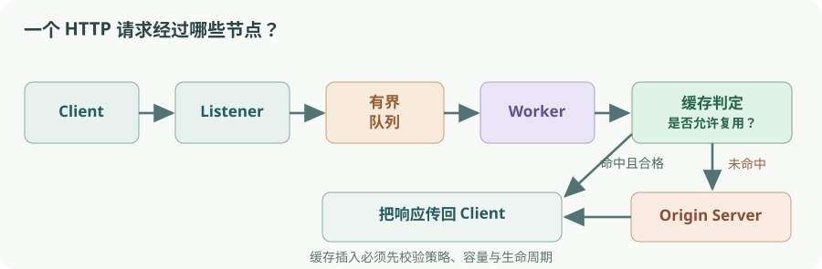
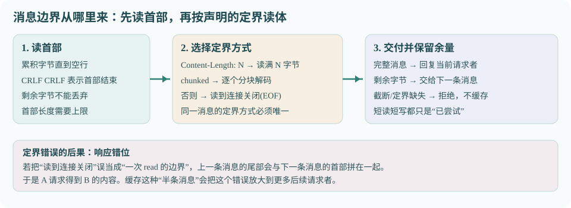
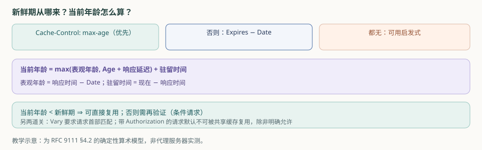

计算机系统 · 从请求到响应 / 26
代理明明转发成功，为什么还会把错误内容给下一个人？
Proxy Lab 把三个子系统接在一起：网络 I/O 负责传递字节，线程池负责并发，缓存负责复用响应。单看每一部分都不难，困难在于客户端断开、缓存过期和多个线程命中同一键时还能不能保持语义正确。
先实现 HTTP/1.0 风格的最小转发路径，再讨论并发与教学缓存。真实 HTTP 共享缓存需满足 RFC 9111 的条件，不能把“GET + URI 相同”当成通用可缓存判据。
26.1 一个请求要穿过哪些边界？
浏览器向正向代理发送目标 URI；代理一面接收客户端请求，一面作为客户端连接源站。最小实现需要按字节处理请求行、首部、响应头、响应体，不能假设一次 read 就读完，也不能假设一次 write 就发完。头部有解析上限，响应体可能包含零字节，不能用 strlen() 推断其大小。

对 HTTP/1.0 教学代理，一个稳健的顺序是：解析并校验目标 → 规范化转发首部 → 连接源站 → 流式回传 → 关闭本次请求的资源。请求目标的解析需处理主机、端口和路径；若实现支持 absolute-form URI，不能把 Host、缺省端口及路径简单拼接后不做校验。
先限定协议功能，再保证正确性
可用范围可以明确限定为课程要求的 HTTP GET 转发；不把 CONNECT 隧道、HTTPS 解密、HTTP/2、完整持久连接或 RFC 9111 一般缓存规则伪装成已实现。生产代理还需要限制目标地址范围、请求大小、超时以及恶意响应，避免被滥用为开放代理。
26.2 为什么共享队列需要“空位”和“元素”两个计数？
Listener 只做 accept 和入队；Worker 从队列取出已连接 fd 并处理请求。容量为 N 的环形队列在任意时刻满足 0 ≤ count ≤ N，不会覆盖未消费的数据，也不会从空队列取 fd。
| 同步对象 | 初始值 | 作用 |
|---|---|---|
slots（计数信号量） | N | 生产者要先占一个空位 |
items（计数信号量） | 0 | 消费者要先等到有元素 |
mutex | 未锁定 | 只保护 head/tail/槽位更新 |
/* 结构性伪代码；sem_wait 需要处理 EINTR，省略初始化与关闭 */
enqueue(fd):
wait(slots)
lock(mutex)
ring[tail] = fd; tail = (tail + 1) % N
unlock(mutex)
post(items)
dequeue():
wait(items)
lock(mutex)
fd = ring[head]; head = (head + 1) % N
unlock(mutex)
post(slots)
return fd锁不应覆盖阻塞性的 DNS 查询、源站连接和响应转发。若队列已满，生产者等待 slots 属于背压；实际服务还必须规定工作线程、队列、fd 资源的上限，并有可控的退出流程。线程数越多并不必然越快，拥塞和锁竞争会改变最优值。
26.3 一个相同的 URL，真的能给不同客户端复用吗？
缓存不仅要回答“有这个键吗”，还要回答“这份响应现在仍新鲜、允许共享、匹配请求首部吗”。例如一个带登录态的响应，即使 URI 相同，也可能只属于某位用户。
交互：四张响应卡片，哪些可进入共享缓存？
简化假设：请求是 GET，状态码 200，没有认证首部且未出现额外的缓存限制；仅为学习响应指令，不代替 RFC 9111 全部判定。
private 限制共享缓存；no-store 禁止存储；Vary 要让选中的请求首部值参与变体匹配。no-cache 不是“不许存”，而是复用前必须成功验证。这些差异常常比如何实现 LRU 更重要。
缓存对象要进行容量检查并在锁保护下管理生命周期：若查到指针后立即解锁，另一个 Worker 可能驱逐该对象，造成 use-after-free。安全起点是持锁复制内容、再释放锁；若 LRU 命中需要移动链表节点，它是写操作，不能在读锁下修改。大量线程同时 miss 时，应考虑同键请求合并，但不要在持有全局缓存锁时等待网络。
/* 教学级缓存判定伪代码，不是完整 RFC 9111 解析器 */
if (method != GET || response_is_private_or_no_store)
bypass_shared_cache();
else if (entry && entry_is_fresh && vary_matches)
copy_entry_while_locked_then_reply();
else
fetch_origin_and_validate_before_optional_insert();26.4 压测先比“正确”，再比“快”
建议把功能验证与性能测量拆开：先用本地源站验证二进制响应、短读短写、长首部拒绝、连接中途关闭、多线程同键访问与缓存淘汰；再给出可复现的环境和原始测量。下面命令仅为运行方法，并不意味着本仓库已实际测得特定 RPS。
# 仅对你控制的本地代理与测试源站执行
ab -n 1000 -c 20 -X 127.0.0.1:8888 http://127.0.0.1:8000/fixture.bin
# 分别测冷缓存/热缓存；保留完整报告与环境信息关注成功响应数、字节一致性、错误比例、吞吐量、P50/P99 延迟、内存及 fd 峰值。ab 的报告字段和使用方式受版本影响，不能用一张虚构的示例表宣称某架构快 3 倍。
自测
两个 Worker 同时查到缓存条目，在取出指针后释放了读锁。另一个线程驱逐该条目，随后会怎样？
查看推导
指针可能悬垂，复制响应时造成越界读取或崩溃。持锁完成复制、引用计数或其他严格生命周期协议都可以解决；仅使用读写锁而没有对象所有权设计是不够的。
资料与适用范围
实验要求：CS:APP3e Proxy Lab。HTTP 缓存规范：RFC 9111。本文将实验简化路径与通用 HTTP 缓存语义分开，示例数据不代表实测性能。
深挖：一次共享缓存命中，至少要过四道关
即使两次请求都指向 /news，也不能仅凭 URL 相同就共享响应。按照 HTTP 缓存规则，先确认响应允许共享缓存存储，再确认所缓存的响应仍然新鲜或经过有效重新验证，最后还要检查 Vary 所列请求首部是否匹配。涉及请求授权时存在单独的共享缓存约束。
GET /newsAccept-Language: zh-CN
响应：Vary: Accept-Language
GET /newsAccept-Language: en-US
即使 URL 相同，也不能直接复用 A 的变体。
| 检查点 | 不满足时的动作 |
|---|---|
| 存储资格（如 no-store、private、认证约束） | 不作为共享缓存内容保存 |
| 响应完整性 | 不能把截断的响应当作完整缓存对象交给其他客户端 |
| 新鲜度 / 重新验证 | 按适用规则向源站验证或获取新响应，不擅自提供过期内容 |
| Vary 指定的请求首部 | 变体不匹配就不能直接命中原缓存对象 |
这是判定流程的教学骨架，不是 RFC 9111 所有条件的替代实现。真正的共享缓存还需正确处理状态码、方法、Cache-Control 指令、验证器及年龄计算。详见 RFC 9111 §3–4。
技术深描 · 26 / MESSAGE FRAMING
一条响应到哪里结束？把字节流定界写成可复算的解析器

read 的返回长度。该图说明定界选择与剩余字节归属，不给出任何具体的请求或源站响应文本。“代理转发成功却把错误内容给下一个人”最常见的根源不是缓存算法，而是消息定界错误：把一次短读当成完整报文，或把“读到连接关闭”与“本次读写边界”混为一谈。TCP 只提供字节流，段边界、send() 调用边界与应用记录没有一一对应关系。
| 定界方式 | 结束条件 | 最常见的错误 |
|---|---|---|
Content-Length: N | 首部后恰好读满 N 字节 | 把短读当作 EOF，或把剩余字节丢弃而不是留给下一条消息 |
Transfer-Encoding: chunked | 逐个读分块长度，直到大小为 0 的分块及尾段 | 只确认首块就回复；或多个定界方式同时出现而不拒绝 |
| 读到连接关闭 | 对端关闭写方向（EOF） | 把它当持久连接下的消息边界，导致下一条消息被拼接 |
python3 examples/deep-ch24-28-models.py 26该模型把同一段报文按 1/7/20/全长字节的不同分块重新拼回，断言只能得到完整且唯一的体；又验证两条流水线消息能按声明长度依次拆开、截断时不交付任何内容、chunked 解码在大小为 0 的分块停止并把尾部字节留给后续。依据 RFC 9112 的报文定界规则与 RFC 9111 的存放条件，模型只检验定界逻辑，不代表已处理完所有首部与状态码规则。
需要强调两点：其一，“可读/可写”只表示一次操作可被尝试，不保证交付正数字节或完整回复，所以真实代码要把 EINTR、EAGAIN 与 0（EOF）分开处理；其二，报文在进入共享缓存前必须先完整、未被截断，否则错误会被放大给更多后续请求者。
逐步核验 · 26b / FRESHNESS
报文能完整转发之后：存储的响应什么时候可以不再问源站？

Vary、Authorization 这两道门。上一节解决的是“一条报文到哪里结束”。定界正确之后，代理还要决定：存下来的响应能不能直接给别人？共享缓存的规则在 RFC 9111 §4.2：能直接复用（fresh）当且仅当当前年龄 < 新鲜期，否则必须再验证。
| 量 | 来源（按优先级） |
|---|---|
| 新鲜期 | Cache-Control: max-age → 否则 Expires − Date → 否则启发式 |
| 当前年龄 | max(表观年龄, Age + 响应延迟) + 驻留时间，表观年龄 = 响应时间 − Date |
两条额外的门必须单独检查，不能只算年龄：带 Vary 的响应只有在请求首部匹配时才可复用；带 Authorization 的请求，共享缓存默认不可复用其响应，除非响应显式允许（如 public）。把“字节定界”与“可复用性”混为一谈，是代理给出错误内容的另一类根源。
python3 examples/deep-ch22-28-b.py 26b模型按 §4.2.3 的算式把新鲜期与当前年龄算成数值，断言“max-age 优先于 Expires”“当前年龄 = 取大后的初始年龄 + 驻留时间”，并给出 fresh/stale 判定。它是对 RFC 9111 算术的确定性复算，不是对某台代理服务器的实测；启发式新鲜期、时钟偏差与逐出策略都是实现选择。